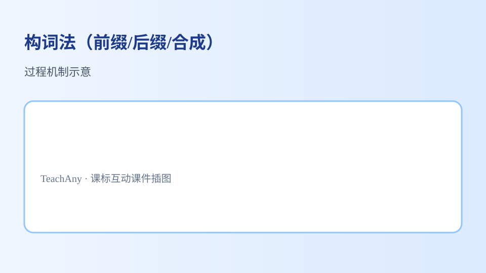

📑 知识图谱 🤝 AI 学伴 📚 课程内容
构词法（前缀/后缀/合成） 指导学生借助构词法知识和词典、词表等工具学习词语，大胆使用新的词块自主表达意义、解决新问题。
构词法（前缀/后缀/合成）：概念—方法—应用
能复述课标要点：指导学生借助构词法知识和词典、词表等工具学习词语，大胆使用新的词块自主表达意义、解决新问题。
能运用所学方法分析构词法（前缀/后缀/合成）相关典型问题
能在情境中正确应用构词法（前缀/后缀/合成）的知识与技能
能识别并纠正关于构词法（前缀/后缀/合成）的常见误区
学习「构词法（前缀/后缀/合成）」时，第一步最应该做什么？
明确课标要求，建立概念框架再练习
直接刷题，不用理解概念
只背结论，不做情境分析
先选一个，错了正好暴露你的前概念，我们一起纠正。
构词法（前缀/后缀/合成） 是初中英语的重要内容。指导学生借助构词法知识和词典、词表等工具学习词语，大胆使用新的词块自主表达意义、解决新问题。
尽量以词块的形式呈现生词，引导学生关注词语的搭配和固定的表达方式，并在围绕主题意义建构结构化知识的过程中，提炼词语的搭配和固定表达方式，构建词汇语义网，积累词块，扩大词汇量。
构词法（前缀/后缀/合成）核心概念示意
学习路径：明确概念 →掌握方法 →情境练习 →反思纠错 。
能借助基本的构词法知识推测语篇中生词的含义，辅助理解语篇内容。

构词法（前缀/后缀/合成）方法与应用
把卡片拖到核心概念 / 方法技能 / 应用情境 / 常见误区 。
📖 读懂语篇主旨
📝 归纳语法/词汇规则
💬 在交际中运用表达
⚠️ 脱离语境死记答案
拖完 4 项后自动判分。
解释题： 请结合课标要点，用2–3句话解释你如何理解「构词法（前缀/后缀/合成）」，并举一个应用例子。
看看老师的提示 提示：先写核心概念，再写方法或步骤，最后举一个具体情境例子。
拓展题： 关于构词法（前缀/后缀/合成），你曾犯过什么错误？后来怎样改正？
关于构词法（前缀/后缀/合成）的学习，哪种做法最科学？
理解课标概念，掌握方法，在情境中练习并反思
只背答案，不做分析
忽略课标，凭感觉答题
选一个并查看反馈。
1 明确了构词法（前缀/后缀/合成）的课标核心要求。
2 掌握了学习构词法（前缀/后缀/合成）的基本路径：概念—方法—应用。
迁移任务： 找一道与「构词法（前缀/后缀/合成）」相关的练习题或生活情境，用本课方法完整解答一遍。
什么是构词法 构词法是指通过特定规则将词素组合成新词的方法。英语中主要有三种构词方式：前缀法（prefixation）、后缀法（suffixation）和合成法（compounding）。前缀法是在词根前加字母或词缀改变词义，如‘unhappy’（un- + happy）；后缀法则在词根后加词缀改变词性，如‘quickly’（quick + -ly）；合成法是将两个独立单词组合成新词，如‘notebook’（note + book）。理解构词法能帮助学生快速扩大词汇量，例如知道‘-less’表示‘没有’，就能推测‘hopeless’意为‘没有希望’。
常见前缀及其功能 前缀通常改变词义而不影响词性。常见否定前缀有‘un-’（undo）、‘in-’（incorrect）、‘dis-’（dislike），表示相反意义；‘re-’表示重复（rewrite）；‘pre-’表示提前（preview）；‘mis-’表示错误（misunderstand）。例如‘unfair’由‘un-’和‘fair’组成，意为‘不公平’。学科词汇中，‘anti-’（antibiotic）表示‘对抗’，‘sub-’（subway）表示‘下方’。提醒学生注意‘in-’的变体如‘im-’（impossible）、‘il-’（illegal），其选择取决于词根首字母。
常见后缀及其功能 后缀主要改变词性。名词后缀‘-er’（teacher）、‘-ness’（happiness）；动词后缀‘-ize’（organize）；形容词后缀‘-ful’（careful）、‘-able’（comfortable）；副词后缀‘-ly’（quickly）。例如‘act’（动词）加‘-ion’变为‘action’（名词）。特殊规则需注意：以‘y’结尾的词加‘-ness’时变‘y’为‘i’（happy → happiness）。科学术语常用‘-ology’（biology）、‘-ist’（scientist）。后缀还隐含情感色彩，如‘-ish’表轻微（childish），‘-ette’表小巧（kitchenette）。
合成词的构成规律 合成词通过组合两个及以上独立词汇构成，形式包括：名词+名词（toothpaste）、形容词+名词（blackboard）、动词+名词（washroom）。书写方式有三种：连写（sunflower）、加连字符（mother-in-law）、分写（post office）。意义往往非字面组合，如‘hotdog’不是‘热的狗’。特殊类型有‘self-’合成词（self-control）和数字合成词（three-year-old）。合成词在科技领域尤多，如‘smartphone’‘download’。提醒学生注意合成词重音通常在首词（‘GREENhouse’ vs. ‘green HOUSE’）。
前缀与后缀的组合使用 许多单词同时包含前缀和后缀。例如‘uncomfortable’=‘un-’+‘comfort’+‘-able’；‘disorganization’=‘dis-’+‘organize’+‘-ation’。分析此类词需按顺序拆解：先去掉前缀，再去后缀，最后识别词根。医学词汇典型如‘antibacterial’（anti- + bacteria + -al）。注意多重词缀可能改变原词根形态，如‘electric’→‘electricity’（-ity导致‘c’变‘cit’）。练习时建议用树状图分解，如‘unhappiness’可拆为[[un-][[happy][-ness]]]。
构词法的跨学科应用 构词法在学科术语中广泛应用。科学类：‘thermo-’（thermometer）、‘hydro-’（hydropower）；数学类：‘poly-’（polygon）、‘-gon’（pentagon）；地理类：‘geo-’（geography）、‘-sphere’（atmosphere）。社科词汇如‘autobiography’（auto- + bio- + -graphy）体现多层构词。计算机术语‘megabyte’（mega- + byte）展示希腊前缀与现代词的结合。引导学生建立学科词缀表，例如发现‘bio-’出现于‘biology’‘biography’‘biodegradable’，可统一记忆‘生命’相关概念。
易混淆词缀辨析 某些词缀形式相似但含义不同：‘-able’（可…的）vs‘-ible’（同义，但多接拉丁词根，如‘visible’）；‘in-’（否定）vs‘in-’（向内，如‘internal’）。发音陷阱：‘-ary’（library）与‘-ery’（bakery）读音相近。同前缀不同义：‘a-’在‘asleep’表状态，在‘atypical’表否定。建议通过对比记忆：列出‘predict’（pre-表提前）与‘prevent’（pre-表阻挡），分析语境差异。特别注意‘en-’可能为前缀（enlarge）或词根部分（energy）。
构词法的创造性使用 构词法允许创造新词满足表达需求。品牌名常用合成法（Microsoft）；网络语言通过加前缀‘e-’（e-book）、‘cyber-’（cyberspace）。临时造词（nonce words）如‘staycation’（stay + vacation）。文学作品中，作者可能自创词缀组合，如《哈利波特》‘muggle’（可能源自‘mug’+‘-gle’）。引导学生尝试构词：给定词根‘port’（携带），组合‘transport’‘export’‘portable’等。但需提醒：并非所有组合都合法，如‘bigly’虽符合‘-ly’规则却非标准词。
📋 课前诊断 1. 你能举出三个带‘un-’的单词吗？2. ‘quickly’中的‘-ly’有什么作用？3. ‘sunflower’属于哪种构词法？
✅ 达标检测 1. 用‘-less’将‘hope’变成形容词 2. 分解‘disagreement’的词素 3. 判断‘preheat’和‘pretest’中‘pre-’含义是否相同
💡 错因诊断 常见错因：混淆‘-er’（表人）与‘-or’（多接拉丁词根如‘actor’）。误区：认为所有合成词都可拆解字面意思（如‘butterfly’）。诊断方法：通过词源词典验证，如‘-er’源自日耳曼语，‘-or’多来自拉丁语。
🚀 迁移挑战 迁移任务：设计5个新词，要求至少使用2种构词法（如前缀+合成），并解释其构成与含义。例如‘eco-car’（合成法，环保汽车）+‘rewild’（前缀法，使重新野化）。
🗺️ 知识图谱：构词法 — 构词法（前缀/后缀/合成）